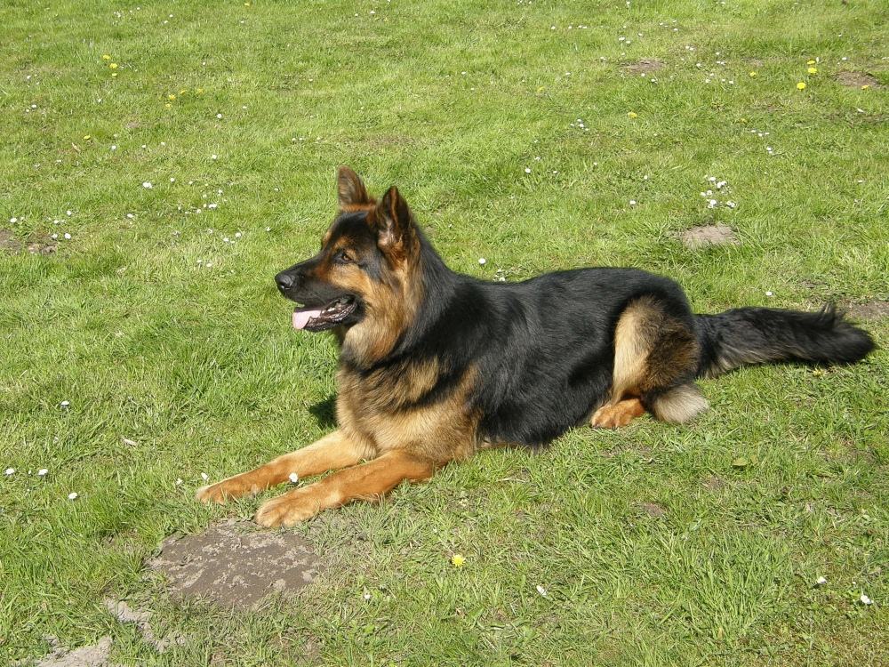
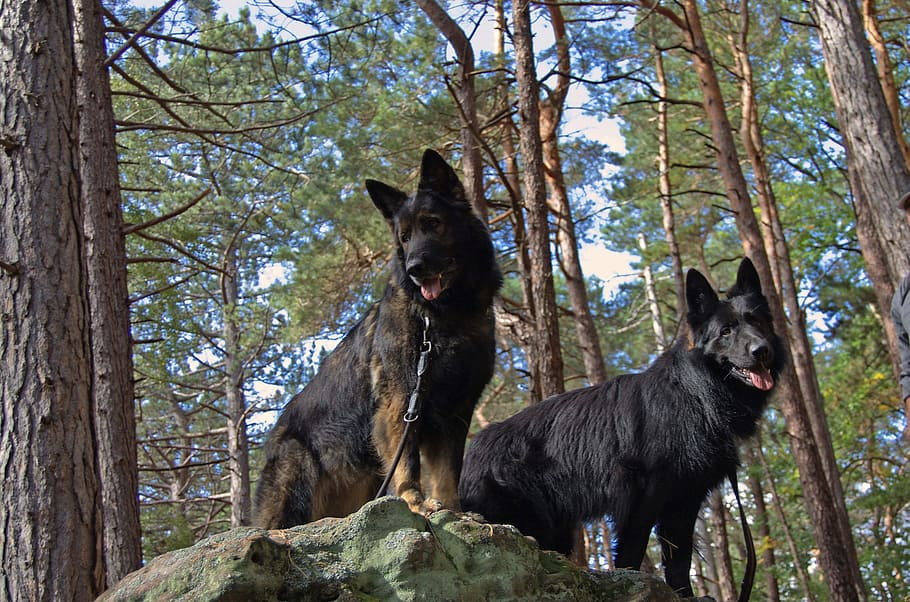

Dans ce site je vais vous parler de l'Altdeutsche Schäferhund, ou "berger allemand ancien type" en français, une race de chien bien méconnue mais pourtant fantastique. Pour ce faire, je vais tout d'abord vous présenter son histoire, quand et comment la race a vu le jour pour la première fois, puis, je vais vous décrire son aspect physique, sa morphologie, et vous parlerez ensuite de son caractère. Je vous ferrais aussi part de ses besoins et vous confierais quelques de mes conseils pour bien s'occuper de lui, et enfin vous partagerais diverses photos de cette race.

